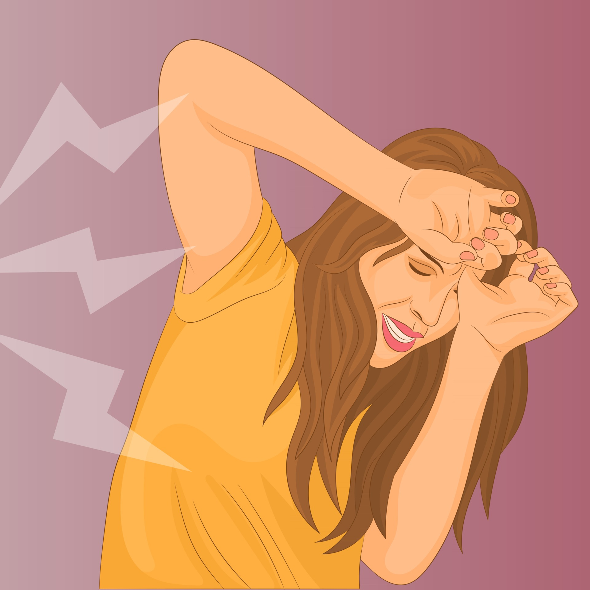

Bullying and Harrasement
Harassment is linked to discrimination and tends to focus on sex or family responsibilities, race, ethnic background or gender identity, colour, religion or belief, sexual orientation or disability. For the bully, anyone will do (irrespective of gender, race etc), especially if the bully feels threatened in some way. The focus is often on competence, or rather, the alleged lack of competence of the bullied person.
